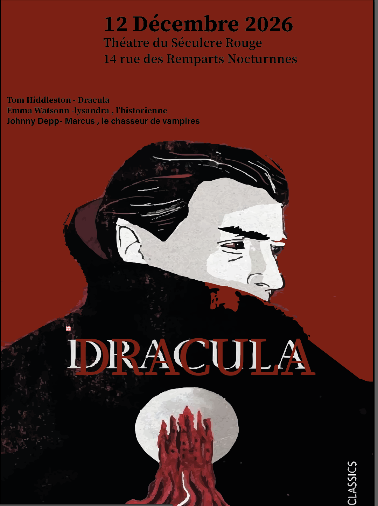

Création graphique / Illustrator

Ce projet consistait à concevoir une affiche graphique autour du thème de Dracula, en explorant un univers sombre, mystérieux et expressif. L’objectif était de transmettre une ambiance forte à travers une composition visuelle impactante.
J’ai travaillé sur l’équilibre entre typographie, couleurs et illustrations afin de créer une affiche lisible tout en conservant une atmosphère dramatique et immersive.